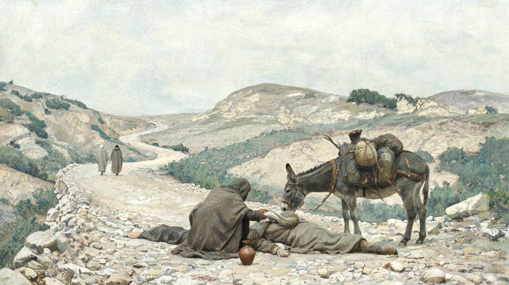
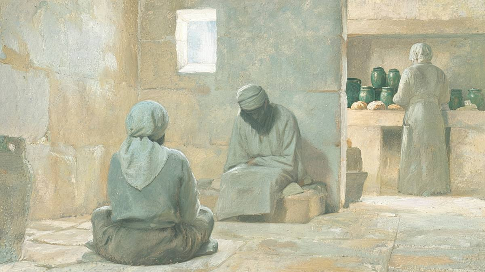

선을 행하면 영생을 얻을까
한 율법교사가 예수님께 물었어요. “내가 무엇을 하여야 영생을 얻으리이까?” 예수님은 “이를 행하라 그러면 살리라”고 답하시고, 선한 사마리아인 이야기를 들려주셨어요. 그렇다면 이 본문은 선을 행해야 구원받는다고 가르칠까요?
한눈에 보기
율법교사는 정확히 무엇을 물었을까요?
“무엇을 해 놓아야 영생을 상속하겠습니까?”예요. 행위가 수단으로 놓인 질문이에요.
어떤 율법교사가 일어나 예수를 시험하여 이르되 선생님 내가 무엇을 하여야 영생을 얻으리이까 예수께서 이르시되 율법에 무엇이라 기록되었으며 네가 어떻게 읽느냐
누가복음 10:25–26 · 개역개정
개역개정의 “무엇을 하여야”는 원문으로 “무엇을 해 놓고서”(τί ποιήσας)예요. 부정과거 분사라서, 영생을 받기 전에 끝나 있어야 할 행위를 묻는 꼴이에요. 마가와 마태는 같은 질문을 다르게 적었어요. 누가만 이 분사 문장을 쓰고, 그것도 두 번 써요.
| 본문 | 원문 · 사역 |
|---|---|
| 마가 10:17 | τί ποιήσω ἵνα ζωὴν αἰώνιον κληρονομήσω; 무엇을 하리이까, 영생을 상속하도록 |
| 마태 19:16 | τί ἀγαθὸν ποιήσω ἵνα σχῶ ζωὴν αἰώνιον; 무슨 선한 일을 하리이까, 영생을 가지도록 |
| 누가 10:25 · 18:18 | τί ποιήσας ζωὴν αἰώνιον κληρονομήσω; 무엇을 해 놓고서 영생을 상속하리이까 |
“얻다”로 옮긴 동사도 눈여겨볼 만해요. 원문은 “상속하다”(κληρονομέω)예요. 상속은 해 놓은 일의 대가로 받는 것이 아니에요. 누구의 자녀인가로 정해져요. 바울도 “아들이면 하나님으로 말미암아 유업을 받을 자”라고 써요(갈라디아서 4:7). “무엇을 해 놓아야 상속하느냐”는 질문 안에 이미 어긋남이 들어 있는 셈이에요. 다만 이것은 문법에서 나온 관찰이에요. 누가가 이 어긋남을 노렸다고 단정할 근거는 없어요.
“시험하다”(ἐκπειράζω)는 신약에 네 번 나와요. 누가복음의 다른 한 번은 광야에서 예수님이 마귀에게 “주 너의 하나님을 시험하지 말라”(신명기 6:16)고 하신 말씀이에요(4:12). 율법교사는 신명기 6장의 사랑 계명을 외우면서, 같은 장이 금한 동사로 다가와요. 우연일 수도 있는 어휘 일치라 울림 정도로만 봐요.
율법교사의 “영생”과 우리가 말하는 “구원”은 같은 것일까요?
가리키는 것은 같아요. 다른 것은 얻는 길이에요.
“영생”(ζωὴ αἰώνιος)이라는 말은 다니엘 12:2에서 처음 나와요. 히브리어로 “영원한 생명”(חַיֵּי עוֹלָם, 하예 올람)이고, 땅의 티끌 가운데서 자는 자들이 깨어나 얻는 삶이에요. 마카베오하 7:9와 솔로몬의 시편 3:12도 영생을 부활과 함께 말해요. 율법교사가 물은 것은 죽은 뒤 막연히 사는 것이 아니에요. 오는 세대, 하나님 나라에서 누릴 삶이에요.
누가 자신이 이 둘을 같은 것으로 다뤄요. 18장에서 한 관리가 율법교사와 글자까지 같은 질문을 해요(18:18). 그 단락 안에서 누가는 “영생을 상속함”을 “하나님 나라에 들어감”(18:24–25), “구원을 얻음”(18:26), “오는 세상에 영생을 받음”(18:30)으로 바꿔 불러요. 네 표현이 한 대화 안에서 오가요. 그러니 “율법교사의 영생은 우리의 구원과 다른 것”이라고 풀면 본문과 맞지 않아요.
| 율법교사 (10:25) | 교회의 고백 | 누가가 적은 답 | |
|---|---|---|---|
| 무엇을 | 오는 세대의 생명 | 죄 사함·칭의·영생·부활 | 영생 = 하나님 나라 = 구원 18:24–30 |
| 누가 | “내가” 해 놓고서 | 하나님이 주심 | “하나님은 하실 수 있느니라” 18:27 |
| 어떻게 | 행함 (ποιήσας) | 그리스도를 믿음 | “주 예수를 믿으라” 행 16:31 |
| 행함은 | 조건 | 열매 | 사랑은 용서의 증거 7:47 |
| 이웃은 | 경계를 묻는다 | 원수까지 | 이웃은 “되는” 것 10:36 |
“이를 행하라 그러면 살리라”는 함정이었을까요?
아니에요. 율법이 실제로 약속한 말이에요.
예수께서 이르시되 네 대답이 옳도다 이를 행하라 그러면 살리라 하시니 그 사람이 자기를 옳게 보이려고 예수께 여짜오되 그러면 내 이웃이 누구니이까
누가복음 10:28–29 · 개역개정
율법교사의 답은 신명기 6:5(하나님 사랑)와 레위기 19:18(이웃 사랑)을 묶은 것이었어요. 틀린 답이 아니었어요. 랍비 아키바도 레위기 19:18을 “토라의 큰 원칙”이라 했고(시프라 케도쉼 4:12), 힐렐도 황금률 하나를 “토라 전체”라 했어요(바빌론 탈무드 샤바트 31a). 예수님은 “네 대답이 옳도다” 하고 인정하세요.
이어지는 “이를 행하라 그러면 살리라”는 레위기 18:5의 메아리예요. 그대로 옮긴 인용은 아니고, “행하다”와 “살다” 두 동사가 겹쳐요.
| 본문 | 원문 · 사역 | 쓰임 |
|---|---|---|
| 레위기 18:5 (70인역) | ἃ ποιήσας ἄνθρωπος ζήσεται ἐν αὐτοῖς 사람이 그것들을 행하면 그것들로 살리라 | 율법의 약속 |
| 느헤미야 9:29 (70인역) | ἃ ποιήσας αὐτὰ ἄνθρωπος ζήσεται ἐν αὐτοῖς 위와 같다 | 지키지 못한 역사의 회고 |
| 누가복음 10:28 | τοῦτο ποίει καὶ ζήσῃ 이것을 계속 행하라, 그러면 살리라 | 율법교사에게 |
| 로마서 10:5 | ὁ ποιήσας ἄνθρωπος ζήσεται ἐν αὐτῇ 행하는 사람은 그것으로 살리라 | “율법에서 난 의” |
| 갈라디아서 3:12 | Ὁ ποιήσας αὐτὰ ζήσεται ἐν αὐτοῖς 그것들을 행하는 자는 그것들로 살리라 | “율법은 믿음에서 난 것이 아니니” |
“행하라”(ποίει)는 현재 명령형이에요. 한 번 선을 베풀라는 뜻이 아니라, 하나님을 온 존재로 사랑하고 이웃을 자기 몸처럼 사랑하는 삶을 계속 살라는 뜻이에요.
그 시대 유대인도 이 구절을 영생과 이어 읽었어요. 아람어 번역인 타르굼 옹켈로스는 레위기 18:5의 “살리라”에 “영원한 생명으로”(לְחַיֵּי עָלְמָא)를 덧붙여요. 위-요나단 타르굼은 “영원한 생명 안에서 살고 그의 몫이 의인들과 함께 있으리라”까지 써요. 율법교사가 영생을 묻자 예수님이 레위기 18:5로 답하신 것은 이 읽기와 정확히 맞물려요. 다만 두 타르굼의 지금 모양은 1세기보다 늦게 굳은 것이에요.
시프라(레위기 랍비 주석)는 같은 구절에서 영생을 끌어내지 않아요. 대신 “이스라엘”이 아니라 “사람”이라고 했으니 토라를 행하는 이방인도 대제사장과 같다고 풀고, “그것으로 살 것이요 그것으로 죽지 말 것이라”고 읽어요(아하레이 모트 13:12–13). 레위기 18:5를 “영생의 조건”으로 읽은 것은 유대 전통 가운데 한 갈래였어요.
그렇다면 예수님은 불가능한 과제를 일부러 내밀어 율법교사를 은혜로 몰아가신 걸까요? 최근 학계의 견해는 셋으로 갈려요.
“이를 행하라”를 읽는 세 갈래
세 견해는 서로 싸우지 않아요. 각자 다른 질문에 답해요. 그리고 누가는 이 셋을 10장 → 18장 → 19장·사도행전 순서로 직접 보여 줘요.
-
1누가복음 10:28·37
언약 안의 순종
이 장면에서 “행하라”는 무슨 뜻이었나?
반어가 아니라 말 그대로예요. “예수가 불가능한 과제를 일부러 내민다는 암시는 서사에 없다.” 놀랜드(WBC), 데이비스(2025), 조다르(2020).
-
2누가복음 18:26–27
율법의 거울
이 요구는 구원 이야기에서 어떤 구실을 하나?
아무도 이루지 못함을 드러내요. “누가 구원을 얻을 수 있나이까” → “하나님은 하실 수 있느니라.” 모리스, 드루쉬(2020), 라이트(2022). 루터와 칼뱅 전통의 “율법의 제2용법”이에요.
-
3누가 19:8–9 · 사도행전 16:33
믿음의 열매
구원받은 사람에게 이 명령은 어떻게 적용되나?
은혜를 받은 사람이 자비를 행해요. 삭개오의 나눔, 상처를 씻어 주는 간수. 믿음은 사랑으로 일한다는 스타인의 견해예요.
“자기를 옳게 보이려고”는 무슨 뜻일까요?
본문이 짚은 문제는 행함이 아니라 스스로 옳다 하는 태도예요.
29절의 “자기를 옳게 보이려고”는 원문으로 “자기를 의롭다 하려고”(δικαιῶσαι ἑαυτόν)예요. “의롭다 하다”(δικαιόω)는 누가복음에 다섯 번 나와요. 다섯 번을 다 놓고 보면 방향이 뚜렷해요.
| 본문 | 누가 누구를 | 평가 |
|---|---|---|
| 7:29 | 백성과 세리들이 하나님을 의롭다 함 | 긍정 요한의 세례를 받음 |
| 7:35 | 지혜가 자녀들로 인해 의롭다 함을 받음 | 긍정 |
| 10:29 | 율법교사가 자기를 | 드러남 |
| 16:15 | 바리새인들이 사람 앞에서 자기를 | 책망 “하나님은 너희 마음을 아신다” |
| 18:14 | 세리가 의롭다 함을 받음 δεδικαιωμένος | 긍정 자기를 낮춘 자 |
누가복음에서 자기를 스스로 옳다 하는 사람은 늘 드러나거나 책망받아요. 의롭다 함을 받는 사람은 “하나님이여 불쌍히 여기소서”라고 한 세리예요. 18:9은 그 비유를 들은 사람들을 “스스로 의롭다고 믿고 다른 이들을 멸시하는 자들”이라고 불러요.
루터교 학자 헐트그렌은 이 동사가 예수님의 비유에서 누가복음에만, 10:29와 18:14 두 번 나온다는 점에 주목해요. 누가와 바울의 직접 관계는 논쟁거리라고 단서를 달면서도, 바울의 영향인지 묻지 않을 수 없다고 써요. 그렇지 않다면 칭의는 바울 이전에 예수님의 가르침에 뿌리를 두었다는 뜻이 된다고요.
그러니 29절의 “내 이웃이 누구니이까”는 순수한 궁금증이 아니에요. 사랑의 의무를 감당할 만한 크기로 줄이려는 질문이에요. 사회정체성 이론으로 이 비유를 읽은 에슬러는 이 질문을 “우리 유대인이 누구를 이웃으로 대할 의무가 있고 누구는 아닌가”를 묻는 “배제형 경계 질문”이라고 불렀어요.
여리고 길에서는 무슨 일이 있었을까요?
예상된 도움은 지나갔고, 예상하지 못한 사람이 멈췄어요.
예수께서 대답하여 이르시되 어떤 사람이 예루살렘에서 여리고로 내려가다가 강도를 만나매 강도들이 그 옷을 벗기고 때려 거의 죽은 것을 버리고 갔더라
누가복음 10:30 · 개역개정
예루살렘 성전산은 해발 약 740m, 여리고는 해발 약 −258m예요. 직선으로 22km 남짓한 거리에서 1,000m 가까이 내려가는 길이라 “내려가다”는 말 그대로예요. “거의 죽은”(ἡμιθανής)은 신약에서 여기 한 번만 나와요. 지나가는 사람이 살았는지 죽었는지 가늠하기 어려운 상태예요.
제사장과 레위인은 “보고 피하여 지나갔다”(ἰδὼν ἀντιπαρῆλθεν)고 해요. “피하여 지나가다”는 신약에서 이 두 절(31·32절)에만 나오는 낱말이에요.
제사장은 정결 규정 때문에 지나쳤을까요?
설교에서 자주 듣는 설명이에요. 성전에서 섬겨야 하니 시체에 닿아 부정해질 수 없었다는 거예요. 1차 자료로 확인해 보면 이 설명은 약해요.
| 근거로 드는 것 | 실제 내용 | 판정 |
|---|---|---|
| 제사장은 친족 외의 시체로 부정해지면 안 된다(레 21:1–3) | 규정은 실제로 있다. 대제사장은 부모로도 부정해지지 말라(21:11) | 확인 |
| 제사장은 성전으로 가는 길이었다 | 본문은 “내려가다가”(κατέβαινεν, 31절). 예루살렘에서 여리고 쪽, 성전 반대 방향이다 | 반증 |
| 여리고에 제사장이 많이 살았다 | “제사장 반열의 절반은 여리고에서 올라왔다”(바빌론 탈무드 타아니트 27a). 근무를 마치고 돌아가는 길이었을 수 있다 | 확인 후대 자료 |
| 시체를 만지면 안 되니 어쩔 수 없었다 | 미쉬나 나지르 7:1 — 대제사장과 나실인도 길에서 버려진 시신을 만나면 부정을 감수하고 장사해야 한다 | 반증 200년경 규정 |
| 레위인도 같은 이유였다 | 레위기 21장의 시체 규정은 제사장 규정이다 | 반증 |
무엇보다 누가는 두 사람이 왜 지나쳤는지 한 마디도 적지 않아요. 정결 규정 설명은 본문 밖에서 들여온 추측이에요. 놀랜드도 제사장이 이웃 사랑의 범위를 두고 고민했다고 생각하면 안 된다고 봐요. 이야기의 극적 구조는 “기대한 도움이 실패한 뒤 예기치 않은 도움이 온다”는 데 있어요.
어떤 사마리아 사람은 여행하는 중 거기 이르러 그를 보고 불쌍히 여겨
누가복음 10:33 · 개역개정

사마리아인은 청중에게 어떤 이름이었을까요?
| 자료 | 내용 | 때 |
|---|---|---|
| 집회서 50:25–26 | “내 영혼이 미워하는 두 민족 … 세겜에 사는 어리석은 백성” | 기원전 2세기 |
| 요세푸스 『유대 고대사』 18.29–30 | 유월절에 사마리아인들이 성전 회랑에 사람의 뼈를 뿌려 성전 출입이 막힘 | 6–9년 |
| 요세푸스 『유대 고대사』 20.118–136 | 명절에 사마리아를 지나던 갈릴리 순례자들이 살해됨. 『유대 전쟁사』 2.232는 한 사람이라고 적어 서로 다르다 | 50년대 예수님 이후 |
| 미쉬나 쉐비이트 8:10 | “사마리아인의 떡을 먹는 자는 돼지고기를 먹는 자와 같다”는 랍비 엘리에제르 전승. 아키바가 “조용하라”며 막음 | 200년경 편집 |
| 요한복음 4:9 · 8:48 | “유대인은 사마리아인과 상종하지 아니함이러라” · 예수님께 “너는 사마리아 사람이라” | 1세기 |
| 누가복음 9:52–56 | 바로 앞 장에서 사마리아 마을이 예수님을 받아들이지 않음. 제자들이 “불을 내려 멸하라 하기를” 원함 | 본문 바로 앞 |
누가복음 독자의 기억 속에서 바로 전에 나온 사마리아인은 예수님을 거절한 마을 사람들이에요. 비유의 충격은 거기서 나와요.
라이언(2021)은 유대인과 사마리아인이 서로를 원수로 여겼다면 누가가 비유 안에서 독자의 주의를 그쪽으로 끌었을 것이라고 봐요. 제사장의 성전행이나 정결 고려도 본문에 없다고 지적해요. 정결 부분은 위 판정과 같아요. 원수 관계는 일부만 받아들일 만해요. 비유 본문은 적대를 말하지 않지만, 누가는 9:52–56과 17:18(“이 이방인”)에서 이미 그 거리를 보여 줬어요. 그래서 이 페이지는 “원수”라는 낱말 대신 누가가 쓴 표현을 따라가요.
누가 이웃이 되었을까요?
질문이 뒤집혀요. “누가 내 이웃인가”에서 “누가 이웃이 되었는가”로요.
네 생각에는 이 세 사람 중에 누가 강도 만난 자의 이웃이 되겠느냐 이르되 자비를 베푼 자니이다 예수께서 이르시되 가서 너도 이와 같이 하라 하시니라
누가복음 10:36–37 · 개역개정
독일 학자 치머만은 이 뒤집힘을 비유의 핵심으로 봐요. 이웃은 내 사랑의 대상이 아니라 “나 자신이 이웃이 되어야 할 주체”라는 거예요. 개역개정은 36절을 “되겠느냐”로 옮겼지만, 원문의 완료형은 사마리아인이 자비를 행해서 이미 이웃이 되었다는 뜻이에요.
37절에서 율법교사는 “사마리아인”이라는 이름을 말하지 않아요. “자비를 베푼 자”라고 행위로 답해요. 헐트그렌은 이것을 “피해 가는 에두른 표현”이라 불러요. 다만 왜 이름을 피했는지는 본문이 말하지 않아요.
“불쌍히 여기다”와 “자비”는 누구의 낱말일까요?
누가복음에서 “불쌍히 여기다”는 세 번 나와요. 나인 성 과부를 보신 예수님(7:13), 사마리아인(10:33), 돌아오는 아들을 본 아버지(15:20)예요. 15장에서 아버지가 불쌍히 여긴 결과 아들은 “죽었다가 살아났다”(15:24)고 해요. 10:28의 “살리라”와 같은 동사(ζάω)예요. 그 “삶”은 아들이 해 놓은 일이 아니라 아버지의 자비에서 왔어요.
“자비”도 같은 방향이에요. 사가랴는 하나님이 “우리 조상에게 긍휼을 베푸셨다”고 노래해요(1:72). 원문은 ποιῆσαι ἔλεος μετὰ τῶν πατέρων ἡμῶν이에요. 37절 “자비를 베푼 자”는 ὁ ποιήσας τὸ ἔλεος μετ’ αὐτοῦ예요. 동사와 목적어와 전치사까지 같은 구문이에요. 사마리아인은 1장에서 하나님이 하신 일을 길 위에서 한 사람이에요.
누가는 이 질문에 답을 어디서 할까요?
18장과 사도행전에서요. 같은 저자가 이 질문을 두 권에 걸쳐 따라가요.
10장의 율법교사는 대답 없이 장면에서 사라져요. 누가는 같은 질문을 18장에서 다시 꺼내요. 관리는 어려서부터 계명을 다 지켰다고 말하고, 예수님은 “아직도 한 가지 부족하니” 가진 것을 다 팔고 나를 따르라고 하세요. 그는 근심하며 남고, 듣던 사람들이 물어요.
듣는 자들이 이르되 그런즉 누가 구원을 얻을 수 있나이까 이르시되 무릇 사람이 할 수 없는 것을 하나님은 하실 수 있느니라
누가복음 18:26–27 · 개역개정
요구를 진지하게 받을수록 결론은 여기로 와요. 사람이 해 놓아서 얻는 것이 아니라 하나님이 하시는 일이에요. 누가는 “무엇을 하여야”라는 질문을 여러 번 기록하고, 묻는 사람과 때에 따라 다른 답을 적어 둬요.
| 본문 | 묻는 사람 | 답 |
|---|---|---|
| 누가 3:10–14 | 무리·세리·군인 | 나누고, 정한 것 이상 받지 말라 (요한) |
| 누가 10:25 | 율법교사 | 율법의 사랑 계명 → 비유 |
| 누가 18:18 | 관리 | 계명 → 다 팔고 나를 따르라 → “하나님은 하실 수 있다” |
| 사도행전 2:37 | 오순절 청중 | 회개하고 예수 그리스도의 이름으로 세례를 받으라, 죄 사함 |
| 사도행전 16:30 | 빌립보 간수 | “주 예수를 믿으라 그리하면 너와 네 집이 구원을 받으리라”(16:31) |
십자가와 부활 이전, 율법 전문가에게는 율법의 답이 주어져요. 이후에는 “믿으라”가 주어져요. 누가는 사도행전 13장에서 이 흐름을 한 문장으로 정리해요. 모세의 율법으로 의롭다 하심을 얻지 못하던 모든 일에서, 믿는 사람은 누구나 그분 안에서 의롭다 하심을 얻는다는 거예요(사도행전 13:38–39). 10:29의 “의롭다 하다”와 같은 동사예요. 이 배치는 두 권을 이어 읽을 때 보이는 흐름이고, 누가가 그렇게 설명한 문장이 따로 있는 것은 아니에요.
비유 바로 뒤에 마리아가 있어요
누가는 비유 다음 장면에 마르다와 마리아 이야기를 둬요(10:38–42). 마리아는 “주의 발아래 앉아 그의 말씀을 듣고” 있었고, 예수님은 마리아가 “좋은 편”을 택했다고 하세요. “행하라”로 끝나는 단락 바로 뒤에 “듣는” 사람을 둔 거예요. 놀랜드는 25–42절 전체를 하나님 사랑을 예수님의 말씀에 대한 순종과 잇는 흐름으로 읽어요.

“좋은 편”의 “편”(μερίς)은 “몫”이라는 말이에요. 미쉬나는 “온 이스라엘은 오는 세상에 몫이 있다”고 하고(산헤드린 10:1), 시편 16:5의 70인역은 “주는 내 기업의 몫”이라고 해요. 율법교사가 행위로 얻으려 한 상속을, 마리아는 앉아 듣는 곳에서 몫으로 받은 셈이에요. “몫”이라는 같은 뜻의 낱말이 이어진다는 관찰이고, 누가가 이것을 의도했다는 증거는 아직 없어서 가설로 둬요.
구원과 자비, 무엇이 먼저일까요?
누가복음 전체에서는 언제나 은혜가 먼저예요.
10:25–37만 떼어 읽으면 “자비를 행해야 산다”로 보이기 쉬워요. 누가복음의 다른 장면을 나란히 놓으면 순서가 드러나요.
| 본문 | 먼저 | 그다음 |
|---|---|---|
| 누가 7:36–50 | 많은 죄가 이미 사함받음 완료형 | 많이 사랑함. 구원의 근거는 “네 믿음”(7:50) |
| 누가 15:20–32 | 아버지가 불쌍히 여겨 달려감 | 아들이 “살아남” |
| 누가 19:1–10 | 예수님이 먼저 부르심 “오늘 내가 네 집에 유하여야 하겠다” | 삭개오의 나눔과 갚음 → “오늘 구원이 이 집에 이르렀다” |
| 사도행전 16:30–34 | “주 예수를 믿으라” | 간수가 바울과 실라의 맞은 상처를 씻어 줌 |
마지막 장면은 눈여겨볼 만해요. 간수는 믿은 그 밤에 두 사람의 “맞은 자리”(πληγαί)를 씻어 줘요. 강도들이 여리고 길의 사람에게 입힌 “상처”(10:30)와 같은 낱말이에요. 누가-행전에서 이 낱말은 네 번뿐이에요. 구원받은 간수가 사마리아인처럼 상처를 싸매는 사람이 된 거예요.
그러니 이 본문은 “선을 행하면 구원받는다”를 가르치지 않아요. 자비의 경계를 긋는 사람이 자기가 받은 자비를 모른다는 것을 드러내요. 반대 방향의 오해도 본문 앞에서 서지 못해요. “믿음으로 구원받으니 자비는 상관없다”는 생각은 37절 “가서 너도 이와 같이 하라”와 맞지 않아요. 이 명령은 반어가 아니에요. 놀랜드는 누가가 행함의 강조를 비판하지 않고 28절과 37절에서 오히려 강화한다고 봐요.
교회는 이 비유를 어떻게 읽어 왔을까요?
처음 천 년 동안은 사마리아인을 그리스도로 읽었어요. 종교개혁 이후로는 그 읽기를 조심해 왔어요.
2세기 말 이레나이우스는 지나가듯 이렇게 써요. 주님께서 강도 만난 자기 사람을 불쌍히 여기시고 상처를 싸매신 뒤 두 데나리온을 주셨는데, 그것은 우리가 성령으로 성부와 성자의 형상과 명문을 받게 하려 함이라고요(『이단 반박』 3.17.3). 지나가듯 말한다는 것 자체가 이 읽기가 이미 당연했다는 뜻으로 읽혀요.
내려가던 사람은 아담이다. 예루살렘은 낙원이고 여리고는 세상이다. 강도들은 적대하는 세력이다. 제사장은 율법, 레위인은 선지자들, 사마리아인은 그리스도다. … 여관은 교회다.
오리게네스 『누가복음 설교』 34 (장로 가운데 한 사람의 해석으로 소개)
알렉산드리아의 클레멘스는 “구주 자신 말고 누구이겠는가”라고 묻고(『어떤 부자가 구원받는가』 29), 아우구스티누스는 “사마리아인은 지키는 자라는 뜻이니 이 이름은 주님 자신을 가리킨다”고 풀어요. 클레멘스의 그 글은 같은 영생 질문을 한 부자(마가 10:17)를 다룬 작품이에요. 교부들도 두 본문을 한 쌍으로 읽었어요.
칼뱅은 이 알레고리를 거부했어요. 흥미로운 것은 그 이유예요. 자유의지를 옹호하던 사람들이 “거의 죽은” 사람을 타락한 아담으로 읽고, 반쯤은 살아 있으니 선을 행할 힘이 아주 꺼지지는 않았다고 끌어냈기 때문이에요. 알레고리가 은혜론을 거스르는 데 쓰인 거예요. 칼뱅은 36절을 두고 “가장 낯선 사람도 우리 이웃이다. 하나님이 서로 돕도록 모든 사람을 묶으셨기 때문이다”라고 썼어요.
| 가설 | 근거와 대표 | 판정 |
|---|---|---|
| 선을 행해야 영생을 얻는다고 가르친다 | 28절·37절 “행하라”. 같은 질문의 짝 18:26–27, 29절의 동기, 행 13:38–39와 충돌 | 반증 |
| 불가능한 요구로 죄를 깨닫게 한다 | 18:18–27, 갈 3:10–12. 모리스·드루쉬. 다만 10장 장면 안에서는 반어가 아님(놀랜드·데이비스) | 유력 10장 장면 밖에서 |
| 사마리아인은 그리스도, 여관은 교회 등으로 하나하나 대응한다 | 이레나이우스·오리게네스·아우구스티누스. 세부 대응은 본문 밖. 학계에서 인정받지 못함(WBC) | 반증 세부 대응 |
| 사마리아인의 자비는 하나님과 예수님의 자비를 닮았다 | “불쌍히 여기다”의 주어 분포, 1:72와 10:37의 같은 구문. 비유가 예수님 자신의 행동을 반영한다는 견해(WBC가 더 끌린다고 평가) | 유력 |
| 경계 없는 이웃 사랑의 모범을 보인다 | 37절 명령, 6:27–36 원수 사랑. 율리허 이후 다수 | 확인 |
| 내 편과 남의 편의 경계를 지운다 | 29절에서 36절로의 질문 전환. 에슬러(2000)·마이클(2019)·치머만(2008) | 확인 |
| 북이스라엘과 남유다의 재통합 소망을 담았다 | 사마리아 = 옛 북왕국, 행 1:8·8장으로 이어짐. 데이비스(2025). 비유 자체에 명시 없음 | 가설 |
정리하면
| 항목 | 근거 | 판정 |
|---|---|---|
| 율법교사의 영생과 교회가 말하는 최종 구원은 같은 것을 가리킨다 | 단 12:2, 눅 18:24–30에서 네 표현이 오감 | 확인 |
| 질문은 행위를 수단으로 놓는다 | τί ποιήσας 신약 2회(10:25·18:18) | 확인 |
| “행하라 그러면 살리라”는 레위기 18:5의 메아리다 | ποιέω + ζάω. 직접 인용은 아님 | 확인 |
| 1세기 무렵 유대 전통 일부는 레 18:5를 영생으로 읽었다 | 타르굼 옹켈로스·위-요나단. 시프라는 다르게 읽음. 타르굼의 연대 문제 | 확인 범위 주의 |
| 누가에서 자기를 의롭다 하는 사람은 늘 실패한다 | δικαιόω 5회 전수 | 확인 |
| 제사장은 정결 규정 때문에 지나쳤다 | “내려가다가”, 미쉬나 나지르 7:1, 본문은 동기를 말하지 않음 | 반증 |
| 10:37은 누가복음에서 사람이 “자비”의 주어인 유일한 곳이다 | ἔλεος 6회 중 5회가 1장의 하나님 | 확인 |
| 누가는 영생 질문의 답을 18:27과 사도행전에서 준다 | 18:26–27, 행 13:38–39 · 16:30–31 | 유력 |
| 마리아의 “좋은 편”은 상속의 몫과 이어진다 | μερίς와 “오는 세상의 몫”에 같은 “몫”이 쓰임 | 가설 |
| 율법교사가 “사마리아인”이라는 이름을 피했다 | 37절 “자비를 베푼 자”. 동기는 본문에 없음 | 미결 |
어려운 말 풀이
- 부정과거 분사
- 헬라어에서 주동사보다 먼저 끝난 행위를 나타내는 동사 모양이에요. “해 놓고서”(ποιήσας)가 그 예예요.
- 현재 명령형
- 계속하는 행동을 명령하는 모양이에요. “행하라”(ποίει)는 한 번이 아니라 늘 행하라는 뜻이에요.
- 완료형
- 이미 일어난 일이 지금까지 결과로 남아 있음을 나타내요. “이웃이 되었다”(γεγονέναι)가 완료형이에요.
- 70인역 Septuagint
- 기원전 3~1세기에 히브리어 성경을 그리스어로 옮긴 번역이에요. 신약 저자들이 자주 인용해요.
- 타르굼 Targum
- 히브리어 성경을 아람어로 풀어 옮긴 것이에요. 번역에 해석을 덧붙이는 일이 많아 당시 유대인이 본문을 어떻게 읽었는지 보여 줘요.
- 시프라 Sifra
- 레위기를 한 구절씩 풀이한 랍비 주석이에요. 3세기 무렵 편집됐어요.
- 미쉬나 Mishnah
- 유대교의 구전 율법 해석을 200년경에 정리한 책이에요. 1세기 관습을 그대로 보여 준다고 단정할 수는 없어요.
- 칭의 稱義
- 하나님이 사람을 의롭다고 선언하시는 일이에요. “의롭다 하다”(δικαιόω)라는 동사에서 왔어요.
- 알레고리 allegory
- 이야기의 등장인물과 사물 하나하나를 다른 실재에 대응시켜 읽는 방법이에요. 교부들은 사마리아인을 그리스도로, 여관을 교회로 읽었어요.
- 율법의 제2용법
- 율법이 사람의 죄를 드러내 은혜를 찾게 한다는 개신교의 가르침이에요. 율법을 거울에 빗대요.
근거 자료
헬라어 통계는 SBL 헬라어 신약(SBLGNT)의 형태소 자료를 직접 집계한 값입니다. “불쌍히 여기다”는 SBLGNT 기준 11회이며, 마가복음 1:41을 다르게 읽는 NA28 기준으로는 12회입니다. 비잔틴 다수본문(RP2018)과 대조한 결과 10:25–37에는 뜻을 바꾸는 이문이 없었습니다. 25·28·37절의 핵심 어구는 두 본문이 같습니다.
레위기·다니엘·미쉬나·탈무드·타르굼·시프라는 Sefaria의 원문과 영역을 대조했습니다. 70인역은 Swete 판으로 확인했습니다. 요세푸스와 폴리비오스는 영역본으로만 확인했습니다. 오리게네스·암브로시우스·아우구스티누스는 영역과 2차 인용으로 확인했으며 라틴어 전문을 대조하지는 못했습니다.
최근 논문 여덟 편의 인용문은 2026년 10월 6일 원문과 한 문장씩 대조했습니다. 루케마(2004), 개더콜(2004), 에슬러(2000)는 원문을 열지 못해 다른 논문의 인용으로만 확인했습니다. 성전산과 텔 에스-술탄 사이 거리는 위경도로 직접 계산했습니다.
- SBLGNT / MorphGNT 형태소 자료 — ζωὴ αἰώνιος(43회) · κληρονομέω · ποιέω · δικαιόω(누가 5회) · πλησίον · σπλαγχνίζομαι · ἔλεος(누가 6회) · μερίς · πληγή 집계
- Robinson–Pierpont 비잔틴 다수본문 2018, 누가복음 10:25–37 대조
- 레위기 18:5 · 19:18 · 19:34 · 21:1–11, 다니엘 12:2 — Sefaria 히브리어 원문, Swete 70인역
- 타르굼 옹켈로스 · 위-요나단 레위기 18:5, 시프라 아하레이 모트 13:12–13 · 케도쉼 4:12 — Sefaria
- 미쉬나 산헤드린 10:1 · 아보트 2:7 · 5:19 · 나지르 7:1 · 쉐비이트 8:10, 바빌론 탈무드 샤바트 31a · 타아니트 27a · 마코트 23b–24a — Sefaria
- 마카베오하 7:9, 솔로몬의 시편 3:12, 집회서 50:25–26 — sacred-texts.com
- 요세푸스 『유대 고대사』 18.2.2 · 20.6.1, 『유대 전쟁사』 2.12.3 — Whiston 영역
- 이레나이우스 『이단 반박』 3.17.3, 클레멘스 『어떤 부자가 구원받는가』 29 — New Advent 영역
- 오리게네스 『누가복음 설교』 34 (Lienhard 영역), 아우구스티누스 『복음서 문제』 2.19 — 2차 인용
- J. Calvin, Harmony of the Evangelists, 누가복음 10:30–37 — CCEL Pringle 영역
- J. Nolland, 『WBC 성경주석 35 누가복음(중)』 (솔로몬) 283–315쪽 — 질문과 행함의 강조, 29절의 동기, 제사장 해석, 기독론적 해석 평가
- J. A. Davies, “The Good Samaritan and the Hope for Kingdom Restoration (Luke 10:25-37)”, Tyndale Bulletin 76 (2025) 153–176 — 원문 대조
- J. S. DeRouchie, “The Use of Leviticus 18:5 in Galatians 3:12”, Themelios 45.2 (2020); E. Jodar, “Leviticus 18:5 and the Law’s Call to Faith”, Themelios 45.1 (2020) — 원문 대조
- A. J. Hultgren, “Enlarging the Neighborhood”, Word & World 37.1 (2017) 71–78 — 원문 대조
- R. Zimmermann, “The etho-poietic of the parable of the good Samaritan”, Verbum et Ecclesia 29.1 (2008) 269–292 — 원문 대조
- M. Michael, “Border-crossing and the Samaritan Traveler”, Stellenbosch Theological Journal 5.3 (2019) 443–471 — 에슬러(2000) 재인용 포함, 원문 대조
- M. Ryan, “Revisiting the Parable of the Good Samaritan”, Studies in Christian-Jewish Relations 16.1 (2021) — 루케마(2004) 재인용 포함, 원문 대조
- K. Wright, “The Good Samaritan (Luke 10:25-37)”, Grace Evangelical Society (2022) — 원문 대조